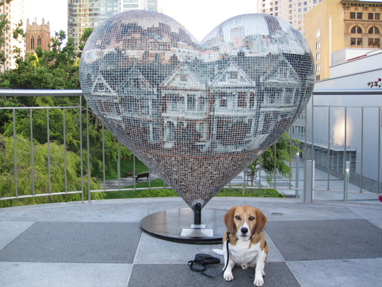

<--Previous
Up
Next-->

Painted Ladies We Love
By Alan Roth and Nick Berg. Sneaking in to Yerba Buena Gardens to see the latest Hearts in SF spinoffs there, where dogs are not allowed, has become a yearly treat for us.